3.4. Points¶
The next stop of the CSS styling tour is the representation of points.
Review of point symbology:
Points are used to represent a location only, and do not form a shape. The visual width of lines do not change depending on scale.
SLD uses a PointSymbolizer record how the shape of a line is drawn.
Labeling of points is anchored to the point location.
As points have no inherent shape of of their own, emphasis is placed on marking locations with an appropriate symbol.
Reference:
Point Symbology (User Manual | CSS Property Listing)
Points (User Manual | CSS Cookbook)
Styled Marks (User Manual | CSS Styling )
Point (User Manual | SLD Reference )
This exercise makes use of the ne:populated_places layer.
Navigate to the Styles page.
Click Add a new style and choose the following:
Name:
point_example
Workspace:
No workspace
Format:
CSS
Replace the initial CSS definition with the following and click apply:
* { mark: symbol(circle); }
And use the Layer Preview tab to preview the result.

3.4.1. Mark¶
Points are represented with the mandatory property mark.
The SLD standard provides “well-known” symbols for use with point symbology: circle, square, triangle, arrow, cross, star, and x.
As a key property the presence mark triggers the generation of an appropriate PointSymbolizer.
* { mark: symbol(square); }
Map Preview:

Before we continue we will use a selector to cut down the amount of data shown to a reasonable level.
[ SCALERANK < 1 ] { mark: symbol(square); }
Resulting in a considerably cleaner image:

Additional properties are available to control a mark’s presentation:
The mark-size property is used to control symbol size.
The mark-rotation property controls orientation, accepting input in degrees.
Trying these two settings together:
[ SCALERANK < 1 ] { mark: symbol(square); mark-size: 8; mark-rotation: 45; }
Results in each location being marked with a diamond:
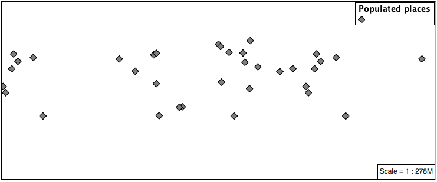Now that we have assigned our point location a symbol we can make use of a pseudo-selector to style the resulting shape.
:symbol - provides styling for all the symbols in the CSS document.
:mark - provides styling for all the mark symbols in the CSS document.
This form of pseudo-selector is used for all marks:
[ SCALERANK < 1 ] { mark: symbol(square); mark-size: 8; mark-rotation: 45; } :mark{ fill: white; stroke: black; }
Updating the mark to a white square with a black outline.
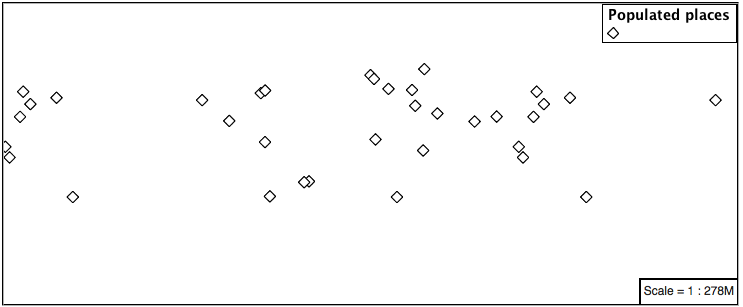The second approach is used to individual configure symbols in the same document.
:nth-symbol(1) - if needed we could specify which symbol in the document we wish to modify.
:nth-mark(1) - provides styling for the first mark symbol in the CSS document.
Using this approach marks can be composed of multiple symbols, each with its own settings:
[ SCALERANK < 1 ] { mark: symbol(square),symbol(cross); mark-size: 16,14; mark-rotation: 0,45; } :nth-mark(1){ fill: red; stroke: black; } :nth-mark(2){ fill: black; stroke: white; }
Producing an interesting compound symbol effect:
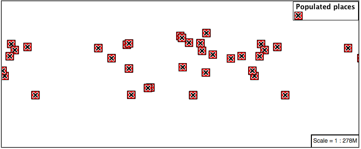
3.4.2. Graphic¶
Symbols can also be supplied by an external graphic,
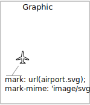This technique was shown with the initial file:airport.svg CSS example.
To use an external graphic two pieces of information are required.
mark property is defined with a url reference to image.
mark-mime property is used to tell the rendering engine what file format to expect
This technique is used to reference files placed in the styles directory.
[ SCALERANK < 1 ] { mark: url(port.svg); mark-mime: "image/svg"; }
Drawing the provided shape in each location:
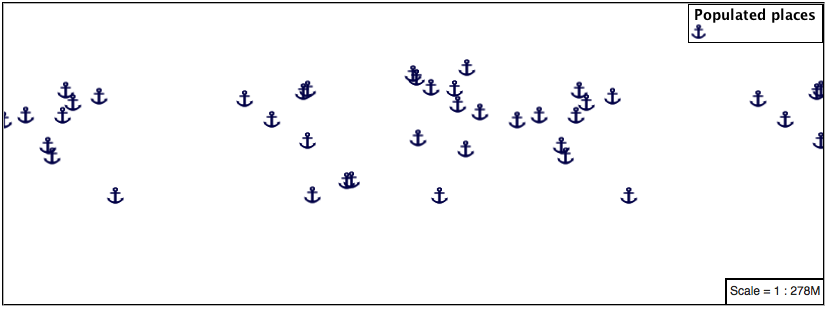The mark property url reference can also be used to reference external images. We can make use of the GeoServer logo.
[ SCALERANK < 1 ] { mark: url("http://localhost:8080/geoserver/web/wicket/resource/org.geoserver.web.GeoServerBasePage/img/logo.png"); mark-mime: "image/png"; mark-size: 16; }
As shown in the map preview.
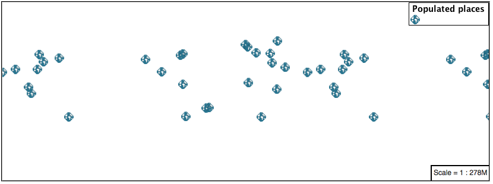
3.4.3. Label¶
Labeling is now familiar from our experience with LineString and Polygons.
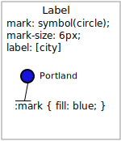The key properties mark and label are required to label Point locations.
Replace
point_examplewith the following:[ SCALERANK < 1 ] { mark: symbol(circle); label: [NAME]; }
Confirm the result in
Mappreview.
Each label is drawn starting from the provided point - which is unfortunate as it assures each label will overlap with the symbol used. To fix this limitation we will make use of the SLD controls for label placement:
label-anchor provides two values expressing how a label is aligned with respect to the starting label position.
label-offset is be used to provide an initial displacement using and x and y offset. For points this offset is recommended to adjust the label position away for the area used by the symbol.
Note
The property label-anchor defines an anchor position relative to the bounding box formed by the resulting label. This anchor position is snapped to the label position generated by the point location and displacement offset.
Using these two facilities together we can center our labels below the symbol, taking care that the displacement used provides an offset just outside the area required for the symbol size.
[ SCALERANK < 1 ] { mark: symbol(circle); mark-size: 10; label: [NAME]; label-offset: 0 -12; label-anchor: 0.5 1.0; font-fill: black; }
Each label is now placed under the mark.

One remaining issue is the overlap between labels and symbols.
GeoServer provides a vendor specific parameter to allow symbols to take part in label conflict resolution, preventing labels from overlapping any symbols. This severely limits the area available for labeling and is best used in conjunction with a large maximum displacement vendor option.
mark-label-obstacle vendor parameter asks the rendering engine to avoid drawing labels over top of the indicated symbol.
label-max-displacement vendor parameter provides the rendering engine a maximum distance it is allowed to move labels during conflict resolution.
label-padding vendor parameter tells the rendering engine to provide a minimum distance between the labels on the map, ensuring they do not overlap.
Update our example to use these settings:
[ SCALERANK < 1 ] { mark: symbol(circle); mark-size: 10; label: [NAME]; label-offset: 0 -12; label-anchor: 0.5 1.0; font-fill: black; mark-label-obstacle: true; label-max-displacement: 100; label-padding: 2; }
Resulting in a considerably cleaner image:

3.4.4. Dynamic Styling¶
We will quickly use scalerank to select content based on @scale selectors.
[@scale < 4000000] { mark: symbol(circle); } [@scale > 4000000] [@scale < 8000000] [SCALERANK < 7] { mark: symbol(circle); } [@scale > 8000000] [@scale < 17000000] [SCALERANK < 5] { mark: symbol(circle); } [@scale > 17000000] [@scale < 35000000] [SCALERANK < 4] { mark: symbol(circle); } [@scale > 35000000] [@scale < 70000000][SCALERANK < 3] { mark: symbol(circle); } [@scale > 70000000] [@scale < 140000000][SCALERANK < 2] { mark: symbol(circle); } [@scale > 140000000] [SCALERANK < 1] { mark: symbol(circle); } * { mark-size: 6; }
Click Submit to update the Map after each step.
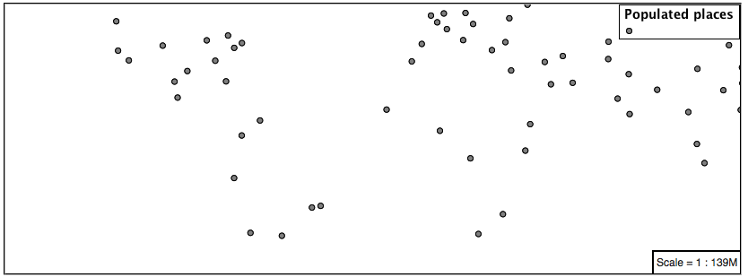To add labeling we must use both the key properties mark and label in each scale selector, using rule cascading to define the mark-size and font information once.
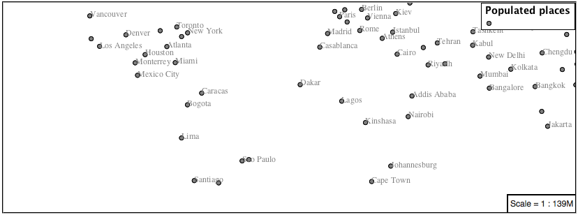[@scale < 4000000] { mark: symbol(circle); label: [NAME]; } [@scale > 4000000] [@scale < 8000000] [SCALERANK < 7] { mark: symbol(circle); label: [NAME]; } [@scale > 8000000] [@scale < 17000000] [SCALERANK < 5] { mark: symbol(circle); label: [NAME]; } [@scale > 17000000] [@scale < 35000000] [SCALERANK < 4] { mark: symbol(circle); label: [NAME]; } [@scale > 35000000] [@scale < 70000000][SCALERANK < 3] { mark: symbol(circle); label: [NAME]; } [@scale > 70000000] [@scale < 140000000][SCALERANK < 2] { mark: symbol(circle); label: [NAME]; } [@scale > 140000000] [SCALERANK < 1] { mark: symbol(circle); label: [NAME]; } * { mark-size: 6; font-fill: black; font-family: "Arial"; font-size: 10; }
We will use label-offset and label-anchor to position the label above each symbol.
Add the following two lines to the * selector:
* { mark-size: 6; font-fill: black; font-family: "Arial"; font-size: 10; label-anchor: 0.5 0; label-offset: 0 6; }

A little bit of work with vendor specific parameters will prevent our labels from colliding with each symbol, while giving the rendering engine some flexibility in how far it is allowed to relocate a label.
Add the following vendor options to the * selector:
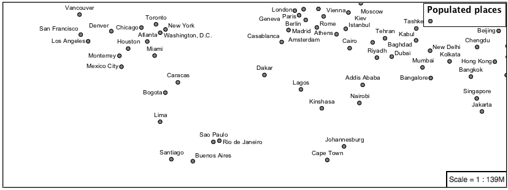* { mark-size: 6; font-fill: black; font-family: "Arial"; font-size: 10; label-anchor: 0.5 0; label-offset: 0 6; mark-label-obstacle: true; label-max-displacement: 90; label-padding: 2; }
Now that we have clearly labeled our cities, zoom into an area you are familiar with and we can look at changing symbology on a case-by-case basis.
We have used expressions previous to generate an appropriate label. Expressions can also be used for many other property settings.
The
ne:populated_placeslayer provides several attributes specifically to make styling easier:SCALERANK: we have already used this attribute to control the level of detail displayed
LABELRANK: hint used for conflict resolution, allowing important cities such as capitals to be labeled even when they are close to a larger neighbor.
FEATURECLA: used to indicate different types of cities. We will check for Admin-0 capital cities.
The first thing we will do is calculate the mark-size using a quick expression:
[10-(SCALERANK/2)]
This expression should result in sizes between 5 and 9 and will need to be applied to both mark-size and label-offset.
Rather than the “first come first served” default to resolve labeling conflicts we can manually provide GeoServer with a label priority. The expression provided is calculated for each label, in the event of a conflict the label with the highest priority takes precedence.
The LABELRANK attribute goes from 1 through 10 and needs to be flipped around before use as a GeoServer label priority:
[10 - LABELRANK]
This expression will result in values between 0 and 10 and will be used for the label-priority.
* { mark-size: [10-(SCALERANK/2)]; font-fill: black; font-family: "Arial"; font-size: 10; label-anchor: 0.5 0; label-offset: 0 [10-(SCALERANK/2)]; mark-label-obstacle: true; label-max-displacement: 90; label-padding: 2; label-priority: [10 - LABELRANK]; }

Next we can use
FEATURECLAto check for capital cities.Adding a selector for capital cities at the top of the file:
/* capitals */ [@scale < 70000000] [FEATURECLA = 'Admin-0 capital'] { mark: symbol(star); label: [NAME]; } [@scale > 70000000] [SCALERANK < 2] [FEATURECLA = 'Admin-0 capital'] { mark: symbol(star); label: [NAME]; }
And updating the populated places selectors to ignore capital cities:
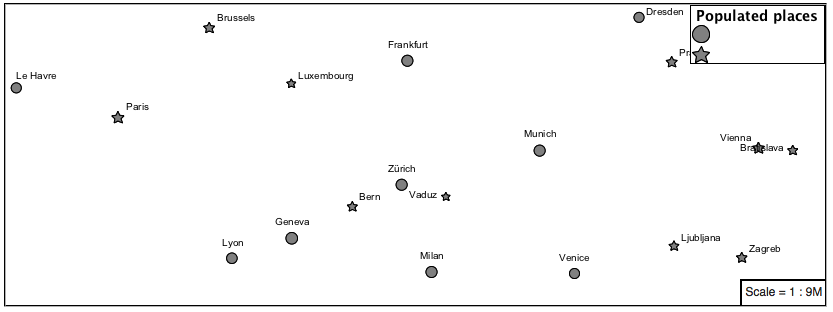/* populated places */ [@scale < 4000000] [FEATURECLA <> 'Admin-0 capital'] { mark: symbol(circle); label: [NAME]; } [@scale > 4000000] [@scale < 8000000] [SCALERANK < 7] [FEATURECLA <> 'Admin-0 capital'] { mark: symbol(circle); label: [NAME]; } [@scale > 8000000] [@scale < 17000000] [SCALERANK < 5] [FEATURECLA <> 'Admin-0 capital'] { mark: symbol(circle); label: [NAME]; } [@scale > 17000000] [@scale < 35000000] [SCALERANK < 4] [FEATURECLA <> 'Admin-0 capital'] { mark: symbol(circle); label: [NAME]; } [@scale > 35000000] [@scale < 70000000][SCALERANK < 3] [FEATURECLA <> 'Admin-0 capital'] { mark: symbol(circle); label: [NAME]; } [@scale > 70000000] [@scale < 140000000][SCALERANK < 2] [FEATURECLA <> 'Admin-0 capital'] { mark: symbol(circle); label: [NAME]; } [@scale > 140000000] [SCALERANK < 1] [FEATURECLA <> 'Admin-0 capital'] { mark: symbol(circle); label: [NAME]; }
Finally we can fill in the capital city symbols using a combination of a selector to detect capital cities, and pseudo selector to provide mark styling.
[FEATURECLA = 'Admin-0 capital'] :mark { fill: black; } :symbol { fill: gray; stroke: black; }

If you would like to check your work the final file is here:
point_example.css
3.4.5. Bonus¶
3.4.5.1. Challenge Geometry Location¶
The mark property can be used to render any geometry content.
Challenge: Try this yourself by rendering a polygon layer using a mark property.
Note
Answer discussed at the end of the workbook.
3.4.5.2. Explore Dynamic Symbolization¶
We went to a lot of work to set up selectors to choose between symbol(star) and symbol(circle) for capital cities.
This approach is straightforward when applied in isolation:
[FEATURECLA = 'Admin-0 capital'] { mark: symbol(star); } [FEATURECLA <> 'Admin-0 capital'] { mark: symbol(circle); }
When combined with checking another attribute, or checking @scale as in our example, this approach can quickly lead to many rules which can be difficult to keep straight.
Taking a closer look both
symbol()andurl()can actually be expressed using a string:[FEATURECLA = 'Admin-0 capital'] { mark: symbol("star"); }
Which is represented in SLD as:
<sld:PointSymbolizer> <sld:Graphic> <sld:Mark> <sld:WellKnownName>star</sld:WellKnownName> <sld:Fill/> <sld:Stroke/> </sld:Mark> </sld:Graphic> </sld:PointSymbolizer>
GeoServer recognizes this limitation of SLD Mark and ExternalGraphic and provides an opportunity for dynamic symbolization.
This is accomplished by embedding a small CQL expression in the string passed to symbol or url. This sub-expression is isolated with ${ } as shown:
* { mark: symbol( "${if_then_else(equalTo(FEATURECLA,'Admin-0 capital'),'star','circle')}" ); }
Which is represented in SLD as:
<sld:PointSymbolizer> <sld:Graphic> <sld:Mark> <sld:WellKnownName>${if_then_else(equalTo(FEATURECLA,'Admin-0 capital'),'star','circle')}</sld:WellKnownName> <sld:Fill/> <sld:Stroke/> </sld:Mark> </sld:Graphic> </sld:PointSymbolizer>
Challenge: Use this approach to rewrite the Dynamic Styling example.
Note
Answer provided at the end of the workbook.
3.4.5.3. Challenge Layer Group¶
Use a Layer Group to explore how symbology works together to form a map.
ne:NE1
ne:states_provincces_shp
ne: populated_places
To help start things out here is a style for
ne:states_provinces_shp:* { fill: white,[ recode(mapcolor9, 1,'#8dd3c7', 2,'#ffffb3', 3,'#bebada', 4,'#fb8072', 5,'#80b1d3', 6,'#fdb462', 7,'#b3de69', 8,'#fccde5', 9,'#d9d9d9') ]; fill-opacity: 05%,50%; stroke: black; stroke-width: 0.25; stroke-opacity: 50%; }
This background is relatively busy and care must be taken to ensure both symbols and labels are clearly visible.
Challenge: Do your best to style populated_places over this busy background.
Here is an example with labels for inspiration:

Note
Answer provided at the end of the workbook.
3.4.5.4. Explore True Type Fonts¶
In addition to image formats GeoServer can make use other kinds of graphics, such as True Type fonts:
* { mark: symbol("ttf://Webdings#0x0064"); } :mark { stroke: blue; }
Additional fonts dropped in the
stylesdirectory are available for use.
3.4.5.5. Explore Custom Graphics¶
The GeoServer rendering engine allows Java developers to hook in additional symbol support.
This facility is used by GeoServer to offer the shapes used for pattern fills. Community extensions allow the use of simple custom shapes and even charts.
Support has been added for custom grpahics using the WKT Geometry representation.
* { mark: symbol("wkt://MULTILINESTRING((-0.25 -0.25, -0.125 -0.25), (0.125 -0.25, 0.25 -0.25), (-0.25 0.25, -0.125 0.25), (0.125 0.25, 0.25 0.25))"); } :mark { stroke: blue; }